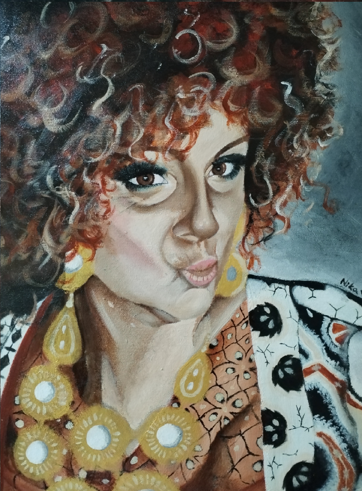

Ja sam Nika, studentica Grafičkog fakulteta, smjer tehničko-tehnološki. Ovom stranici želim predstaviti sebe, svoje interese i svoj portfolio te svoj napredak kroz radove. U svoje slobodno vrijeme bavim se tradicionalnim i digitalnim crtanjem. U tradicionalnom crtanju često koristim akrilne boje za portrete. Kod digitalnog crtanja koristim tablet, Wacom ili APPLE ipad, a aplikacije koje koristim su Krita ili Ibis Paint X.
TRADICIONALNA UMJETNOST:



DIGITALNA UMJETNOST:
KRITA
IBIS PAINT X:

Slijedeći video prikazuje tehniku crtanja te konačan rezultat: YouTube video